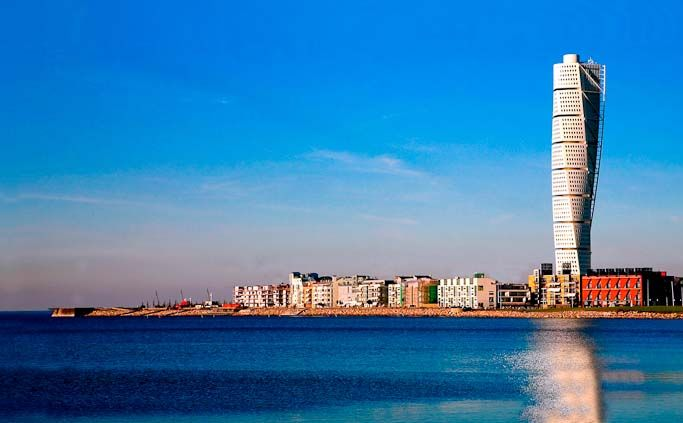

Malmo
Malmö is the capital and largest city of the Swedish county of Scania. Malmö is the third largest city in Sweden, after Stockholm and Gothenburg, and the sixth largest city in Scandinavia, with a population of above 300,000. Here are the following tourist sites you can visit in Malmo
Oresund Bridge
The majestic Oresund Bridge (resundsbroen) is located 15 minutes from Malmö's city center. The stunning bridge, which has been in the works for decades and has been recognized across the world since its opening in 1999, has garnered even more fame as the focal subject of the blockbuster popular Danish/Swedish TV drama The Bridge. The bridge has three functions: it is a road, a railway, and a tunnel. The first eight kilometers lead to Peberholm, a man-made island. It then connects to a four-kilometer tunnel built to avoid interfering with incoming flights at Copenhagen Airport. Take a trip across the bridge and into the tunnel to Denmark, Sweden's neighbor.
Turning Turso

The most talked about building in southern Sweden is located around 2.7 kilometers from Malmö Central Station and is easily accessible by bus or automobile. The stunning Turning Torso is 190 meters high and incorporates residential, office, and meeting space. It is the world's first "twisted skyscraper" and the tallest structure in Scandinavia. The skyscraper is inspired by a sculpture called "Twisting Torso" by designer, artist, and architect Santiago Calatrava, which was featured in the competition brochure for the design and building of the Oresund Bridge. It took four years to complete the cutting-edge structure. It was built in 2005 and is powered by locally produced renewable energy.
Lilla Torg
No matter the season, Lilla Torg — literally "Little Square" — is one of Malmö's busiest sites. Its history may be traced all the way back to the 1500s, when a medieval market was established here. It's now the best place in Malmö to drink coffee, relax, and people-watch. Numerous terraced cafés with views of the town square compete for space. All of them provide a diverse menu, ranging from traditional Swedish fare to sushi. Lilla Torg is also known for its charming merchants' or burghers' mansions from the sixteenth, seventeenth, and eighteenth centuries.